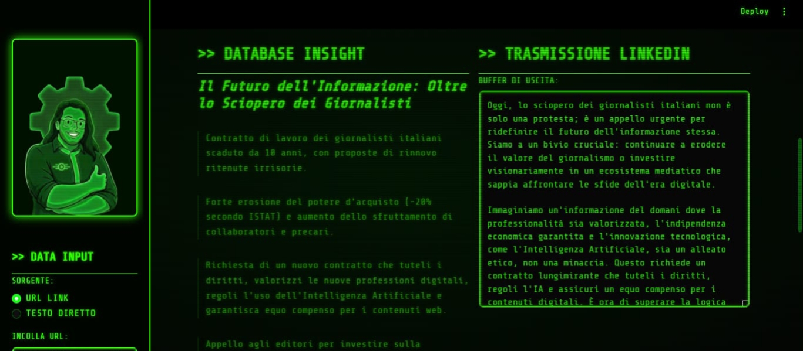
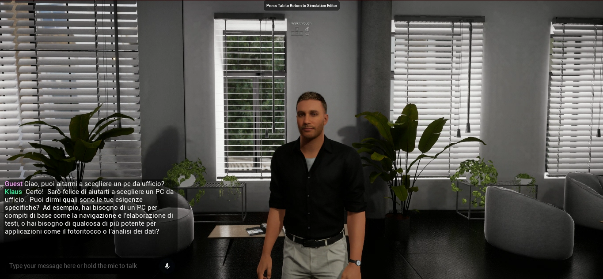

Propongo soluzioni smart custom che integrano AI e automazione per risolvere problemi e ottimizzare i processi aziendali. Dal concept alla produzione.
Soluzioni AI su misura per ogni esigenza di business
Assistenti conversazionali AI-powered per customer service, lead generation, supporto tecnico e automazione FAQ.
Sistemi semplici di riconoscimento immagini, object detection, quality control automatico, analisi video.
Modelli predittivi per forecasting vendite, demand planning, manutenzione predittiva e ottimizzazione inventario.
Sentiment analysis, document classification, entity extraction, summarization automatica e traduzione con modelli linguistici avanzati tramite chiavi API.
Analisi approfondita del problema, definizione KPI, studio fattibilità tecnica, valutazione dati disponibili e stesura specifiche funzionali.
Raccolta e pulizia dati, tuning e validazione performance.
Sviluppo backend API, frontend UI/UX ibrido AI, integrazione modelli AI, implementazione business logic e connessione con sistemi esistenti.
Testing e iterazioni basate su feedback reali.
Applicazioni AI che ho applicato

Molti professionisti non hanno tempo né strumenti per filtrare notizie, fake news e contenuti irrilevanti, né per trasformare velocemente le informazioni rilevanti in contenuti pronti per LinkedIn..
Web app ARBITER in stile terminale retro, sviluppata in Streamlit e Pyhton e integrata con modelli API come Gemini 2.5, motore di ricerca DuckDuckGo e parser testi, con moduli dedicati al filitro, organizzazione e produzione post.
Creazione rapida di titoli, sintesi a bullet e post LinkedIn pronti alla pubblicazione, migliorando la produttività di marketer, content creator e professionisti tech/business.
Un architetto richiedeva una consulenza su come gestire l'illuminazione in una sezione storica della città di Roma, per vedere in prima persona un eventuale modello 3D del progetto finale.
Modello GPT addestrato con dati urbanistici e dati architettonici contestuali alla natura storica del progetto, insieme ad un ambiente di metaverso aggiornato con la nuova illuminazione.
Progettazione efficace e consegna dell'ambiente e del modello addestrato all'architetto, con alto indice di soddisfazione.

Un negozio di assistenza informatica a Roma aveva bisogno di un modello AI che catturasse l'occhio dei clienti e potesse rispondere a domande basiche poste da questi ultimi.
Sistema custom per rilevare espressioni facciali e parole in tempo reale. Integrazione con PC e webcam e installazione in totem verticale.
Avatar che interagisce con i clienti, generando interesse crescente e feedback positivo.
Tecnologie e framework per applicazioni AI.
Dipende dalla complessità. Un chatbot base può richiedere 2-3 settimane, mentre sistemi predittivi possono richiedere 2-4 mesi. Fornisco sempre una timeline dettagliata dopo la fase di allineamento.
Idealmente sì, ma non è obbligatorio. Posso aiutare a definire una strategia di raccolta dati, o sfruttare con modelli pre-addestrati per partire subito.
I sistemi che utilizzo sono creati in maniera da rispettare le normative correnti vigenti sulla privacy. Ogni dato caricato non rimane realmente in mio possesso e può essere revocato in ogni momento.
Discutiamo del vostro progetto e implementiamo la nuova soluzione custom nel vostro workflow!